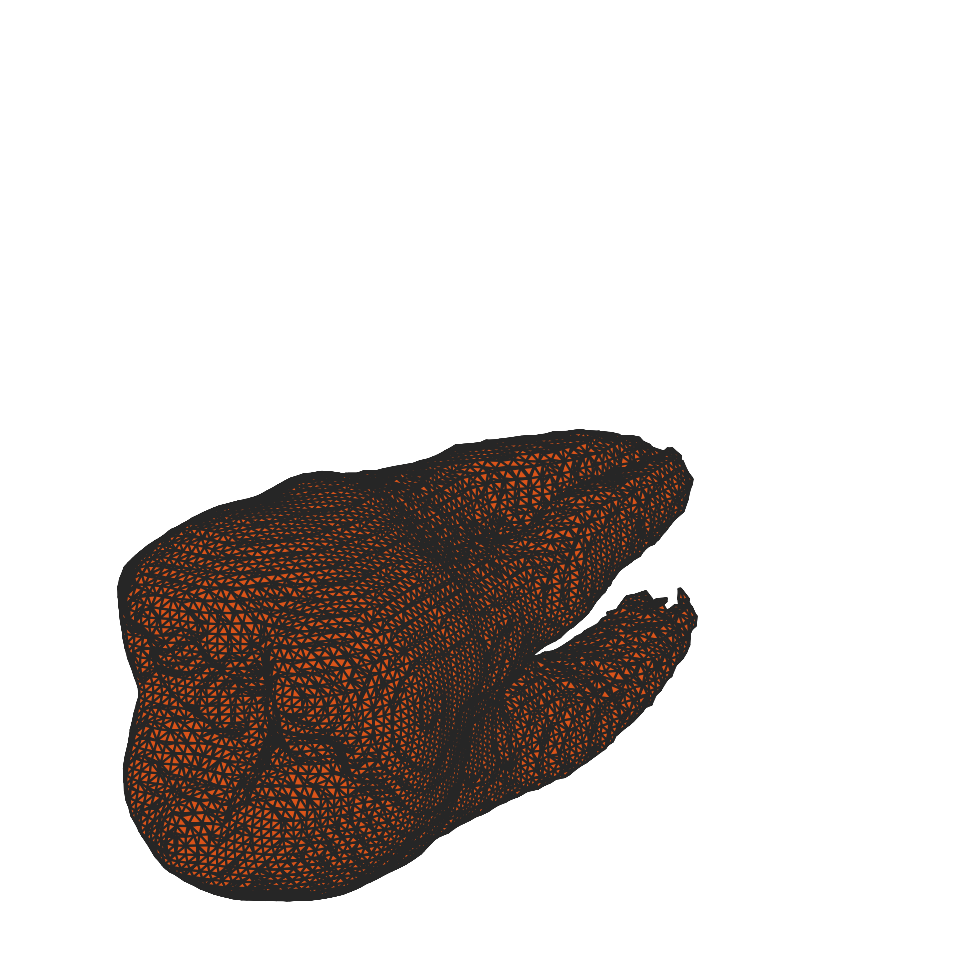

📝 case_6
⚠️ LOW SCORE12/35 (34.3%)
📋 Task Description
1. Read the file "data/dataset_003/eval_iso_surface_determination_target_1.txt" to get the target iso-surface values for different tooth structures.
2. Load data/dataset_003/dataset_003.tif into napari.
3. Switch to 3D view mode and set the rendering to iso.
4. Find the iso surface value that shows the target clearly.
5. Rotate the camera to several angles and take a screenshot of the result each time to check if the target structure is clearly visible from different angles.
6. If the target structure is not clearly visible, adjust the iso surface value and take a screenshot again.
7. Stop when the target structure is clearly visible or you have tried five different iso surface values.
8. Save the final screenshot to "eval_visualization_tasks/case_6/results/{agent_mode}/screenshot.png".
🖼️ Visualization Comparison
Ground Truth

Agent Result

Image not available📏 Vision Evaluation Rubrics
📊 Detailed Metrics
Visualization Quality
7/20
Output Generation
5/5
Efficiency
0/10
Input Tokens
1,248,285
Output Tokens
16,129
Total Tokens
1,264,414
Total Cost
$6.4834